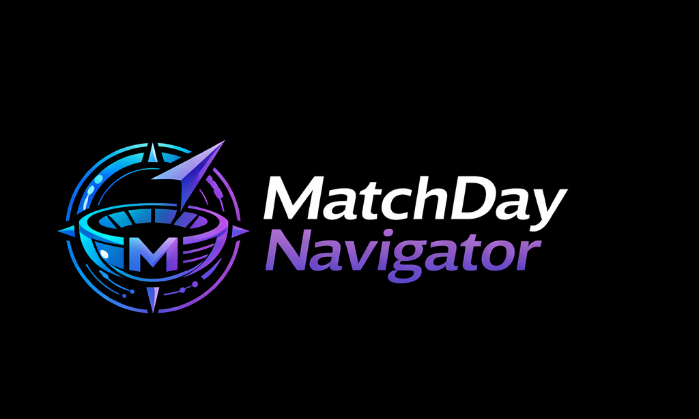

Your request has been successfully received and securely delivered to the MatchDay Navigator coordination team.
MatchDay Navigator exists to support cities, venues, and partners through calm, practical, event‑specific matchday guidance — without adding operational burden.